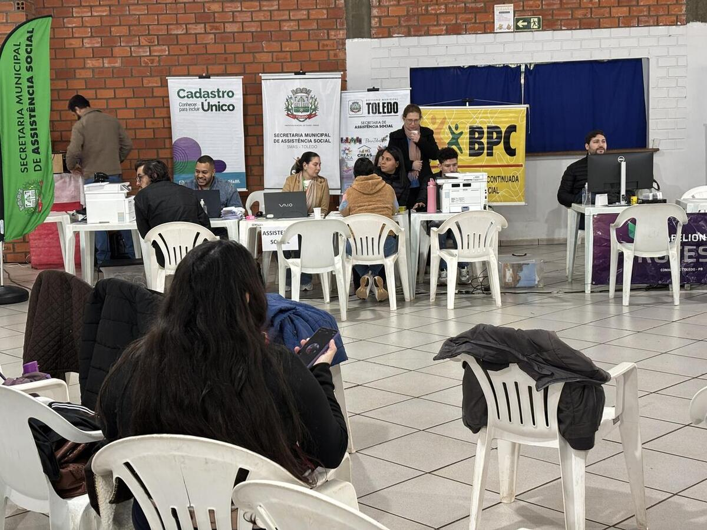

Gabriel
Identified Actions
In Toledo, human rights education gains strength through events of active citizenship and social inclusion. A recent milestone is the Municipal Human Rights Conference, promoted at the Jardim Europa Youth Center, focused on debates about racial equality, combating violence, and minority rights. Another practical example of guaranteeing fundamental rights is the "Paraná in Action" program, held at the Desirée Refosco Event Center, which provides free document issuance (CIN), legal guidance (Public Defender's Office), issuance of the card for autistic people (CIPTEA), and job vacancies, ensuring citizenship and dignity to the vulnerable population.
Media and References
Official Report: Paraná in Action in Toledo
Municipal Human Rights Conference
